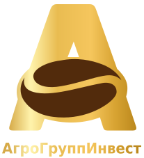

ПРЯМЫЕ ПОСТАВКИ
Эфиопская Арабика —
от истоков
до вашей чашки
Эфиопия
Мы специализируемся на прямых поставках органически выращенного зелёного кофе сорта Арабика из колыбели этого прекрасного напитка — Эфиопии.

КОФЕ С ИСТОРИЕЙ ПРОИСХОЖДЕНИЯ ЭФИОПИЯ РОССИЯПРЯМЫЕ ПОСТАВКИ
Мы специализируемся на прямых поставках органически выращенного зелёного кофе сорта Арабика из колыбели этого прекрасного напитка — Эфиопии.